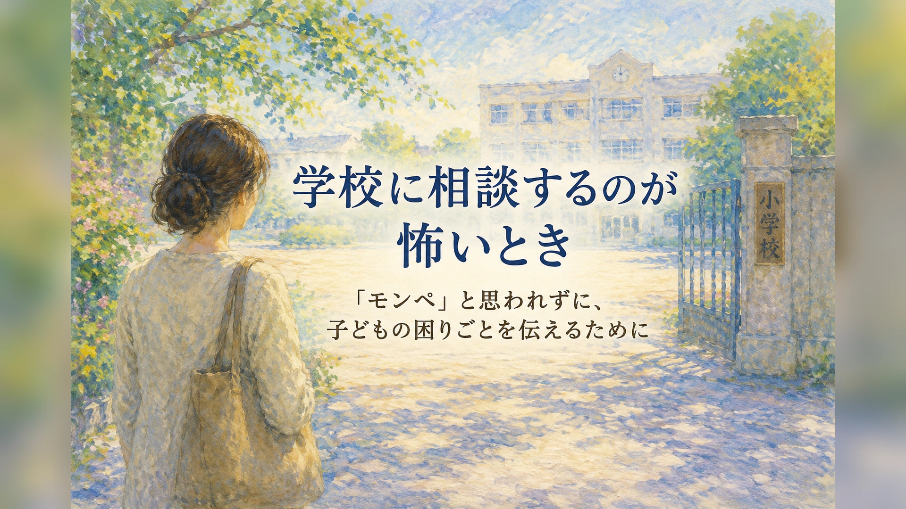

1. 「モンペと思われたくない」という不安
学校に相談するとき、保護者は思っている以上に気を使っています。 先生も忙しい。クラスには他の子もいる。 うちの子だけ特別扱いを求めているように見えないだろうか。 相談したことで、子どもが教室で気まずくならないだろうか。 そのような不安があると、言いたいことを飲み込んでしまいます。
とくに「モンペ」という言葉が広く使われるようになってから、 保護者は学校へ相談する前に、自分の言葉を何度も点検するようになりました。 これは保護者が弱いからではありません。 学校との関係を壊したくない、子どもに不利益が出てほしくないという、 切実な配慮でもあります。
ただし、遠慮しすぎると、子どもの困りごとが学校に届かないままになります。 家庭で出ている疲れ、不安、登校しぶり、宿題での崩れ、友達関係のつまずきは、 学校からは見えにくいことがあります。 保護者が伝えることで、初めて支援の入口が見える場合があります。
相談は、先生を責める行為ではありません。 子どもの困りごとを、家庭と学校で同じ地図にするための行為です。
2. 相談とクレームの違い
保護者が学校に伝えるときに不安になるのは、 「これは相談なのか、クレームなのか」が自分でもわかりにくくなるからです。
相談とクレームを分ける基準は、声の大きさではありません。 子どもの状態を共有し、これからどうするかを一緒に考えようとしているかどうかです。
| 伝え方 | 相手に伝わりやすい印象 | 調整の方向 |
|---|---|---|
| 「ちゃんと見てください」 | 学校を責めているように聞こえやすい | 「どの場面で困っているかを一緒に確認したいです」と伝える |
| 「配慮してください」 | 何をすればよいかが見えにくい | 「指示を板書でも残していただけると助かります」と具体化する |
| 「うちの子は傷ついています」 | 事実確認の前に対立になりやすい | 「帰宅後に泣く日が増えています。学校での様子を教えてください」と共有する |
| 「特別扱いしてほしいわけではないのですが」 | 保護者が必要以上に下がってしまう | 「本人が学びやすくなる方法を相談したいです」と目的を示す |
相談では、学校にすべてを要求する必要はありません。 反対に、保護者が必要以上に謝り続ける必要もありません。 子どもに必要な支援を、具体的な場面から一緒に考えることが大切です。
3. 感情ではなく、事実にして伝える
保護者の不安や怒りには、理由があります。 ただ、最初の相談で感情だけを伝えると、学校側は何から確認すればよいのかが見えにくくなります。 そこで、家庭で見えていることを、できるだけ事実にして伝えます。
事実にするポイント
- いつ起きているか：月曜の朝、給食の日、体育の前日、宿題の時間など
- どこで出ているか：家庭、登校前、帰宅後、宿題中、寝る前など
- どんな姿か：泣く、固まる、怒る、腹痛、沈黙、寝つきの悪さなど
- どのくらい続いているか：数日、数週間、学期に入ってからなど
- 本人の言葉：嫌だ、怖い、わからない、どうせ無理、など
- 家庭で試したこと：声かけ、休憩、量の調整、予定表、医療相談など
たとえば、「学校がつらそうです」だけでは、学校側も把握しにくいことがあります。 しかし、次のように伝えると、具体的になります。
「今週に入ってから、帰宅後に30分ほど泣く日が3回ありました。 本人は詳しく話せませんが、宿題を出すと固まります。 学校での学習場面で、負担になっていることがないか一緒に確認したいです。」
事実にして伝えることは、感情を消すことではありません。 保護者の不安を、学校が一緒に扱える形に整えることです。
4. お願いは「具体的に・小さく・見直せる形」で
学校に相談するとき、お願いが大きすぎると、すぐに実行しにくいことがあります。 反対に、具体的で小さなお願いなら、学校も試しやすくなります。
| 大きすぎるお願い | 試しやすいお願い |
|---|---|
| 「授業をわかりやすくしてください」 | 「宿題の範囲を連絡帳にも書いていただけると助かります」 |
| 「叱らないでください」 | 「全体の前ではなく、個別に短く伝えていただけると本人に入りやすいです」 |
| 「友達関係を何とかしてください」 | 「休み時間に特定の子とのやり取りで困っていないか、少し見ていただけますか」 |
| 「給食を無理にさせないでください」 | 「最初から量を減らし、残してよいことを本人に確認していただけますか」 |
| 「登校しやすくしてください」 | 「つらい日は、まず保健室か相談室に入る形を試せないでしょうか」 |
そして、お願いは一度決めたら終わりではありません。 「2週間試して、本人の様子を見て、また相談したいです」と伝えると、 学校側も見直しを前提にしやすくなります。
5. 合理的配慮は特別扱いではない
保護者が相談をためらう理由の一つに、 「うちの子だけ特別扱いを求めているように見えるのではないか」という不安があります。
しかし、子どもが学ぶうえで困難を抱えている場合、 必要な変更や調整を相談することは、わがままではありません。 合理的配慮は、一人一人の障害の状態や教育的ニーズに応じて、 本人・保護者と学校が対話しながら考えるものです。
もちろん、学校の体制や授業の目的との関係で、すべての希望がそのまま実現するとは限りません。 だからこそ、最初から「これを必ずしてください」と決めつけるより、 「本人が困っていること」「学校で可能な方法」「代替案」「見直し時期」を一緒に考えることが大切です。
合理的配慮として相談しやすい例
- 口頭指示だけでなく、板書やメモでも確認できるようにする
- 座席を音、視覚刺激、友達関係に合わせて調整する
- 課題量や提出方法を本人の状態に合わせて調整する
- 全体の前で注意せず、個別に短く伝える
- 給食の量や食べ方を調整する
- 疲れたときに保健室や別室で整える時間を作る
- 行事や予定変更について、事前に見通しを持てるようにする
配慮の目的は、楽をさせることではありません。 子どもが学びに参加できる条件を整えることです。
6. 学校に伝えるときの文例
相談の言葉は、あらかじめ準備しておくと伝えやすくなります。 ここでは、責める言い方になりにくく、かつ保護者の困り感が伝わる文例を示します。
最初に相談を切り出すとき
「学校にお願いや要求をしたいというより、 家庭で見えている困りごとを共有し、本人が学びやすくなる方法を一緒に考えたいです。」
家庭での様子を伝えるとき
「学校では頑張っているように見えるかもしれませんが、 帰宅後に強く疲れが出ています。 学校で緊張している場面がないか、一緒に見ていただけると助かります。」
配慮をお願いするとき
「本人は口頭の指示が重なると混乱しやすいです。 板書やメモなど、後から確認できる形を少し試せないでしょうか。」
先生を責めたいわけではないと伝えるとき
「先生の対応を責めたいわけではありません。 家庭で出ている様子も含めて、本人に合う方法を一緒に探したいです。」
継続して相談したいとき
「一度で結論を出すというより、まず2週間ほど試して、 本人の様子を見ながらまた相談させていただけますか。」
相談の場で大切なのは、完璧に話すことではありません。 子どもの状態を、学校と共有できる形にすることです。
7. 担任一人に抱え込ませない
学校への相談というと、まず担任の先生を思い浮かべます。 もちろん担任は重要な窓口です。 ただし、子どもの困りごとが複数の場面にまたがる場合、 担任一人で抱えるには難しいこともあります。
そのようなときは、校内の支援体制につなげることを相談してよいです。
| 相談先 | 相談しやすい内容 |
|---|---|
| 担任 | 授業中、宿題、友達関係、日々の教室での様子 |
| 養護教諭 | 腹痛、頭痛、疲れ、保健室利用、体調面の変化 |
| 特別支援教育コーディネーター | 校内支援体制、合理的配慮、通級、個別の支援計画 |
| スクールカウンセラー | 不安、気持ちの整理、本人・保護者の相談 |
| スクールソーシャルワーカー | 家庭、福祉、医療、地域資源との連携 |
| 管理職 | 校内全体の体制づくり、複数教員での共有、継続的な対応 |
「担任を飛ばす」という意味ではありません。 担任を責めず、担任だけに背負わせないためにも、 必要に応じて校内の複数の大人で共有することが大切です。
8. 話が進みにくいとき
相談しても、すぐに思うような返事が返ってこないことがあります。 学校側にも、体制、時間、人員、授業運営上の制約があります。 そのため、最初の相談で結論が出ないこともあります。
ただし、そこで保護者がすべてを飲み込む必要はありません。 話が進みにくいときは、次のように整理します。
話が進みにくいときの確認ポイント
- 学校が難しいと言っている理由は何か
- 代替案はあるか
- いつまで試すのか
- 誰が本人の様子を確認するのか
- 次の面談時期を決められるか
- 校内委員会や特別支援教育コーディネーターにつなげられるか
- 教育相談、医療、福祉など外部機関と連携できるか
代替案を相談するとき
「その方法が難しいことは理解しました。 では、本人の負担を少し下げるために、学校で可能な別の方法はありますか。」
次回につなげたいとき
「今日すぐに結論が出なくても大丈夫です。 ただ、家庭での状態が続いているため、次にいつ確認できるかを決めておきたいです。」
一度の相談でうまくいかなくても、相談そのものが失敗とは限りません。 情報を共有し、少しずつ支援の形を調整していくことが大切です。
9. 相談前に整理しておきたいメモ
学校に相談する前に、短いメモを作っておくと、話が整理しやすくなります。 長い資料である必要はありません。 A4一枚程度で、事実と相談したいことをまとめます。
このメモの目的は、学校に要求を突きつけることではありません。 子どもの困りごとを、学校と共有できる形に整えることです。
10. 避けたい言い方と、置き換えたい言い方
学校に相談するとき、保護者が悪いわけではなくても、 言い方によっては対立的に聞こえてしまうことがあります。 逆に、遠慮しすぎて必要な情報が伝わらないこともあります。
| 避けたい言い方 | 置き換えたい言い方 |
|---|---|
| 「先生のせいで行きたがりません」 | 「学校のどの場面で負担が出ているのか、一緒に確認したいです」 |
| 「うちの子だけ見てください」 | 「本人が困りやすい場面だけ、少し確認していただけると助かります」 |
| 「絶対にこうしてください」 | 「まずこの方法を試し、難しければ別の方法も相談したいです」 |
| 「ご迷惑をおかけしてすみません」だけで終わる | 「ご負担をおかけしますが、本人が学びやすくなる方法を一緒に考えたいです」 |
| 「特別扱いで申し訳ないのですが」 | 「本人が学習に参加するために必要な調整として相談したいです」 |
相談の言葉は、強すぎても、弱すぎても伝わりにくくなります。 目指すのは、対立でも遠慮でもなく、子どもの状態を一緒に見られる言葉です。
まとめ：「モンペと思われないか」より、子どもの困りごとを共有する
学校に相談するのが怖いと感じる保護者は少なくありません。 その不安は、先生との関係を壊したくない、子どもに不利益が出てほしくないという思いから来ています。
ただ、遠慮しすぎると、家庭で見えている大切なサインが学校に届かないままになります。 帰宅後の疲れ、宿題での崩れ、登校前の腹痛、友達関係の不安、給食のつらさ。 それらは、学校での支援を考えるうえで重要な情報です。
相談は、学校を責めるためのものではありません。 子どもの困りごとを、家庭と学校で同じ地図にするためのものです。 事実を整理し、具体的に伝え、小さく試し、必要に応じて見直す。 その積み重ねが、子どもに合った支援につながっていきます。
「モンペと思われたくない」と一人で抱え込む前に、 まずは短いメモにして、相談の入口を作ってみてください。 保護者が声を上げることは、わがままではありません。 子どもが学びやすくなる条件を、学校と一緒に探すための大切な一歩です。
学校への相談で、何をどこまで伝えればよいか迷うときは、一人で抱え込まなくて大丈夫です。 まなびの森教育研究所では、家庭で見えている困りごとを整理し、学校と話し合うための言葉づくりをお手伝いします。
保護者向け相談ページを見る